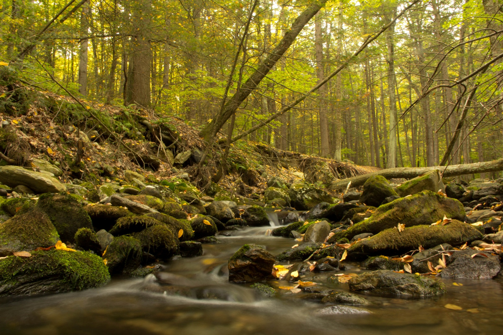

The objective of the clean water act is to 'restore and maintain the chemical, physical and biological integrity of the Nation's waters.' However, much of the work conducted to date both around the country and in Connecticut has focused on restoring impaired waters. More recent work under EPA's healthy watersheds program and in Connecticut has begun to bring more emphasis on identifying and protecting high quality waters. These efforts are needed as preliminary work in Connecticut noted the possible reduction of taxa highly sensitive to pollution (BCG 2 - Figure 1) at long-term sentinel stream monitoring stations over the past ~ 30 years.
The Biological Condition Gradient (BCG) is a conceptual model that describes changes in aquatic communities and provides a more refined way of assigning stream health than the traditional pass/fail approach. The additional fine tuning allows us to identify minimally stressed healthy streams with sensitive taxa found only under least disturbed conditions (e.g. BCG tiers 1 and 2). The map identifies the locations of minimally stressed streams and their upstream drainage systems that support and protect critical habitat for sensitive and native species. In addition, the map identifies cold water habitat within these drainage basins. Cold Water supports native cold water fish species. Hover over a point to see if the high quality water sampling site also has temperature samples indicating cold water. Additional mapping of cold water habitat can be found: https://ctdeepwatermonitoring.github.io/ColdWaterHab/ Additional information on this project and the data included in the map can be found https://github.com/marybecker/HighQualityStreams/.